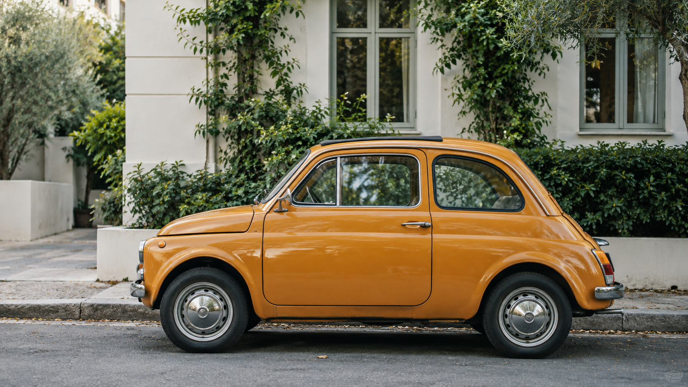

001 — VISUAL STORYTELLING
光与影之间
在一帧画面里，
留下日常经过的温度。
ONE PHOTOGRAPH / THREE STUDIES
同一个瞬间，
不同的观看方式。
街角的色彩
01 / STREET车窗里的反射
02 / REFLECTION时间的纹理
03 / TEXTUREA WAY OF SEEING
先看见，
再留下。
一辆车、一段街道、一束经过的光。
作品的秩序来自照片本身，文字留出呼吸的空间。
LET'S MAKE SOMETHING QUIETLY GOOD
你的下一帧，
从哪里开始？
留下一个本地项目草稿。